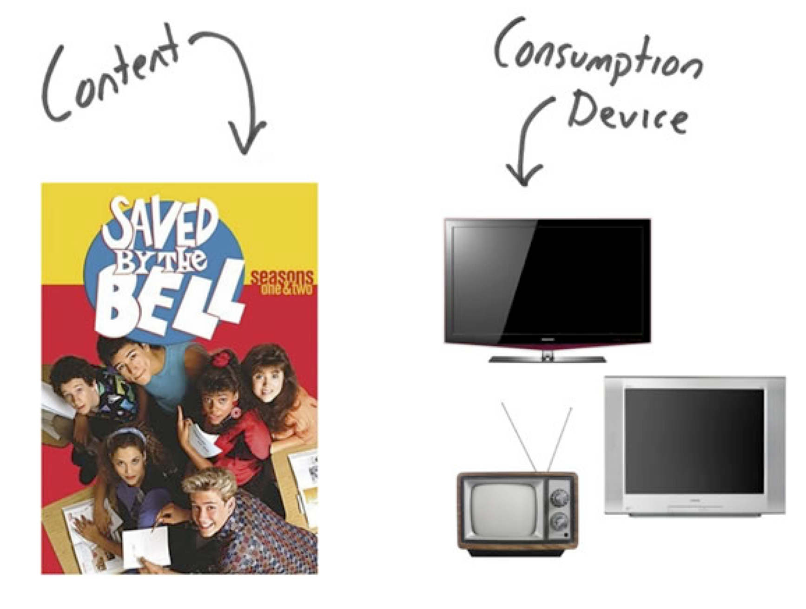
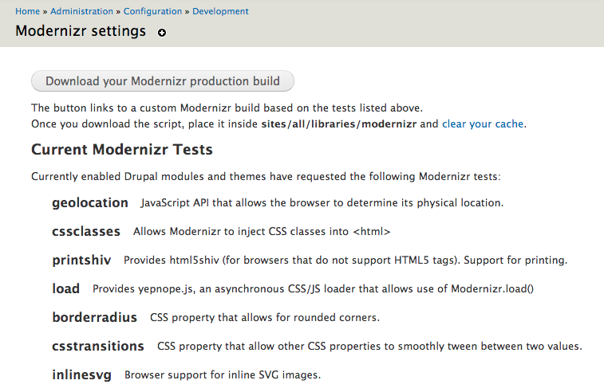

Meet the Modernizr Module
DrupalCon Portland 2013
Who am I?
Chris Ruppel
frontend developer
I do open source stuff:
Lessons from TV
Strive to deliver the best experience everywhere
NOT the same experience. The best experience.
Further reading:
Progressive Enhancement 2.0
Tiered Adaptive Frontend Experiences (TAFEE)
Modernizr 3 workflow
tiered, adaptive front-end experiences
Customize the experience to the
unique capabilities of each browser.
Prioritize reliable, fast UX over consistency.
Old browsers are black/white TVs, new browsers are HD
How can we solve...
- Device diversity
- Fragmentation between versions
- Fragmentation between devices
- Backward compatibility
- Future friendliness
user-agent sniffing is error-prone;
unable to scale as more devices are created
Detect individual features on
each browser using Javascript
Code: http://www.modernizr.com
When should you test?
If you need geolocation, test for it.
If you need CSS transitions, test for them.
If you need HTML5 audio or video, test for them.
If you need inline SVG, test for it.
If you need web sockets, test for it.
If you need data URIs, test for them.
If you need something cool and the
UI breaks without it, test for it.
Conditional loading
Load things based on tests
- Browser properties
- Browser features
- User actions or preferences
Making these decisions in the browser is the
core mechanism for tiered experiences.
Modernizr.load()
Modernizr.load({
test: Modernizr.geolocation,
nope: '/sites/all/libraries/geolocation/geo.js',
callback: function(){ geo.init(); }
});
Progressive loading
Modernizr can be used the other way around too.
Use it to load stuff only when needed.
Modernizr.load({
test: Modernizr.mq('(min-width: 42em)'),
yep: '/sites/all/themes/example/xl.css'
});
Modernizr module
How does it help me build tiered experiences?
Drupal APIs
Test API: allows modules/themes to declare tests
Load API: allows modules/themes to use Modernizr.load()
Test API
Modules use a hook:
function MYMODULE_modernizr_info() {
$tests[] = 'geolocation';
return $tests;
}Themes use the .info file:
modernizr[tests][] = geolocationRebuild Modernizr
Load API: Modules
Modules use another hook:
function MYMODULE_modernizr_load() {
$load[] = array(
'test' => 'Modernizr.geolocation',
'nope' => array('/' . drupal_get_path('module','geolocation') . '/js/geo.js'),
'callback' => 'function(){ geo.init(); }',
);
return $load;
}
...which turns into:
Modernizr.load({
test: Modernizr.geolocation,
nope: '/sites/all/modules/geolocation/js/geo.js',
callback: function(){ geo.init(); }
});
Load API: Themes
mytheme.info file:
modernizr[Modernizr.cssfilters][yep][] = css/super-fancy.css
...turns into:
Modernizr.load({
test: Modernizr.cssfilters,
yep: '/sites/all/themes/mytheme/css/super-fancy.css'
});
mytheme_modernizr_load_alter()
works the same as module hooks too.
drupal.org docs
When to use a test?
Can I use stays current on browser support
HTML5 Please has polyfills and some loose recommendations.
Don't always use Modernizr
Only use it for stuff that's vital
- border-radius has a natural fallback: 0px
- gradients have natural single-color fallbacks
- Location-based apps will always need Geolocation
- Inline SVG looks awesome on hi-rez displays and
incurs no download penalty
Pitching compatibility
Why limit a site based on a stale browser version?
Instead, we should be asking
what features are needed to make this site?
Use the data we have
Take the high-level requirements (both yours and the client's) and plug it into caniuse, and get a rough compatibility percentage
Tell your client:
"Yes, IE8 will support 83% of the features."
Modernizr v3
This type of project estimation is on the roadmap.
Tests now include dependencies and links to caniuse.
Systems like Drupal are poised to take
advantage of this data in an automated fashion.
/*!
{
"name": "CSS Animations",
"property": "cssanimations",
"caniuse": "css-animation",
"polyfills": ["transformie", "csssandpaper"],
"tags": ["css"],
"warnings": ["Android < 4 will pass this test, but can only animate a single property at a time"],
"notes": [{
"name" : "Article: 'Dispelling the Android CSS animation myths'",
"href": "http://goo.gl/CHVJm"
}]
}
!*/
define(['Modernizr', 'testAllProps'], function( Modernizr, testAllProps ) {
Modernizr.addTest('cssanimations', testAllProps('animationName'));
});
Move the web forward
Nudging clients toward this outlook helps everyone.
Especially you!
Questions?
Contact me:
chris ❀ fourkitchens.com
Rate this session!
Visit the session pageto leave feedback.
It means a lot to me ❤ Thanks!
Short link: http://j.mp/meet-modernizr
Select "Evaluate This Session"